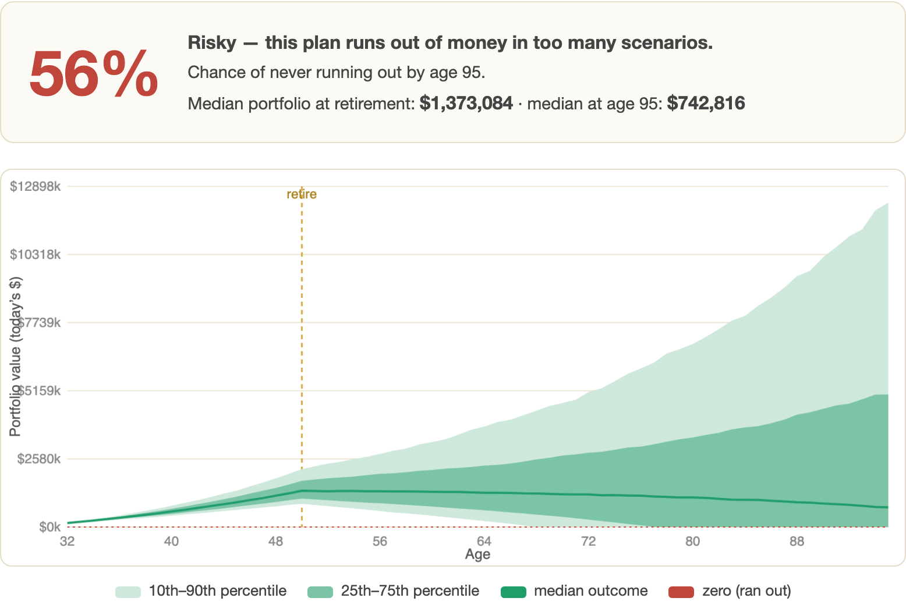
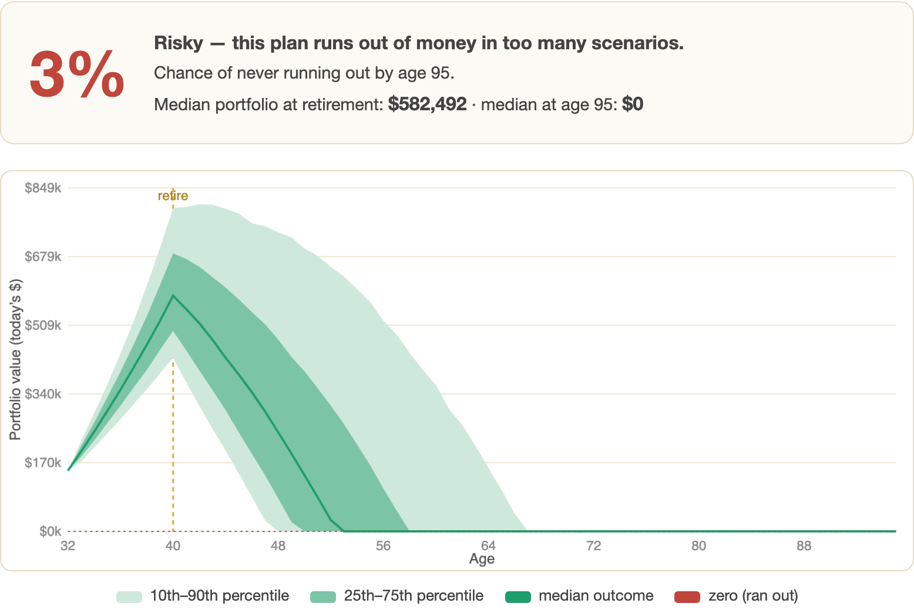
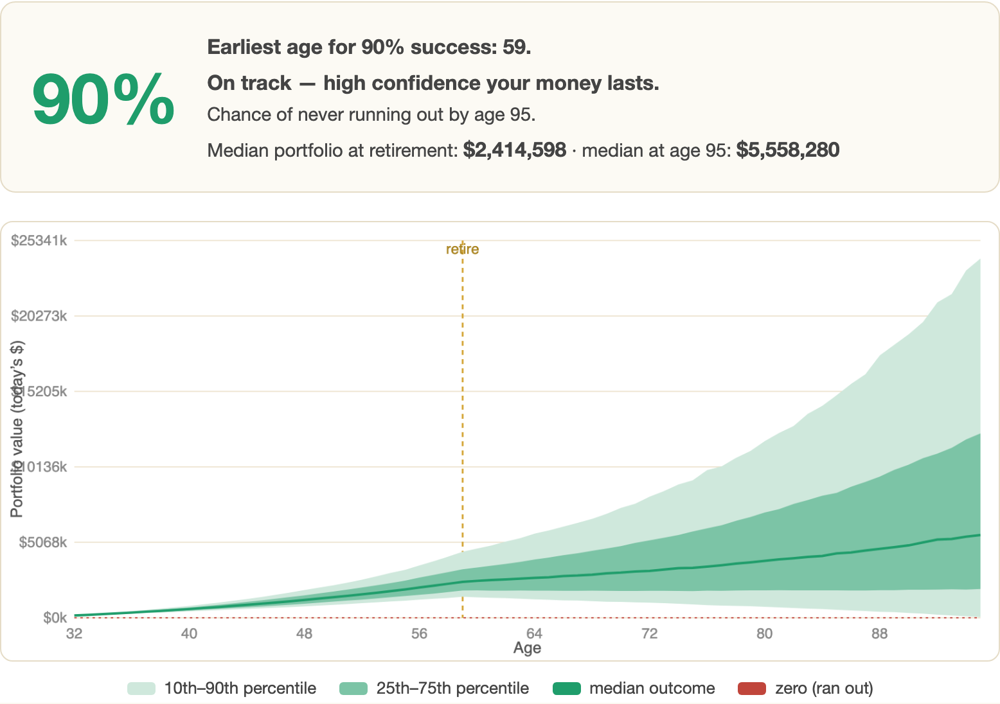
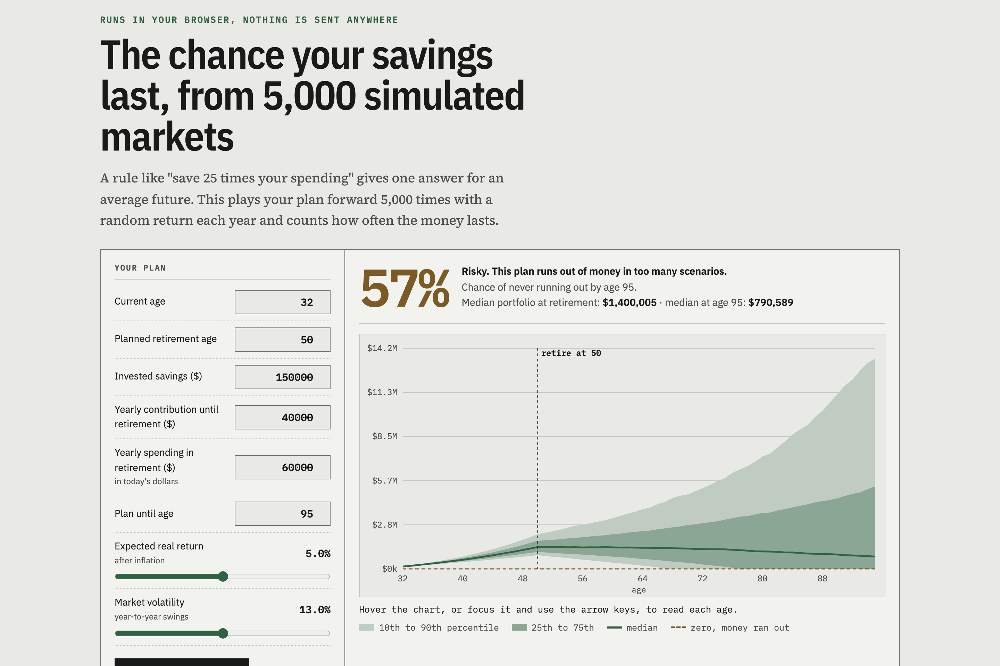
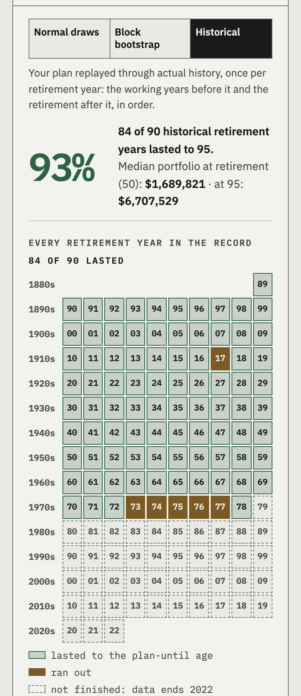

Monte Carlo, 5,000 paths per run
You enter eight numbers: age, retirement age, savings, yearly contribution, yearly spending, plan-until age, expected real return and volatility. The simulator plays that plan forward one year at a time, 5,000 times, with each year's return drawn at random. It reports the share of those paths that never run out of money and draws the 10th to 90th percentile spread as a fan chart. One button searches retirement ages for the first one that reaches 90%. It all runs in the browser; there is no server.

Success rate of the same plan retiring at 40, 50 and 59. Only the retirement age changes.
Random paths per run, each one year-by-year from today to the plan-until age.
Earliest retirement age that clears 90% for the default plan, found by the built-in search.
Network requests made by the simulator. One HTML file, vanilla
JavaScript, a <canvas> chart.
Test log
To show what the simulator is for, I ran the default plan three times and moved only the retirement age. Savings, contributions, spending, the 5.0% real return and the 13.0% volatility stayed fixed.
| Retire at | Success | Median at retirement | Median at 95 | |
|---|---|---|---|---|
| 40 | 3% | $582,492 | $0 | |
| 50 | 56% | $1,373,084 | $742,816 | |
| 59 | 90% | $2,414,598 | $5,558,280 |
Figures read from the app's result cards in the screenshots on this page. Each run draws fresh random numbers, so a rerun moves them by a point or so.


The 50-year-old plan at 56% is the one a rule of thumb gets wrong. At 50 the median portfolio is $1.37 million against $60k of spending, a 4.4% withdrawal rate, close enough to "4%" to look fine. Nearly half the simulated paths still run dry before 95.
Why simulate
The 4% rule and "save 25 times your spending" both describe an average future. A crash in the first few years of retirement does far more damage than the same crash twenty years later, because you are selling assets to live on while prices are down. Two paths with the same average return can end in opposite places depending on when the bad years land.
Drawing thousands of random sequences puts a number on that risk. The success rate is the share of the 5,000 paths that never touch zero before the plan-until age.
Method
For each of 5,000 paths, the simulator starts from current savings and steps
forward a year at a time. Each year it draws a return from a normal
distribution with your chosen mean and standard deviation (a Box-Muller
transform on Math.random), applies it to the balance, then adds
the contribution if you are still working or subtracts spending if you have
retired. A balance that goes negative is set to zero and the path is marked
as failed.
After the loop it sorts the 5,000 balances at every age and reads off the 10th, 25th, 50th, 75th and 90th percentiles for the chart. The earliest-age search tries every retirement age from next year upward, 2,500 paths each, and stops at the first that reaches 90%. It then reruns that age at 5,000 paths for the card you see.

<canvas>, no charting libraryOn a phone
The inputs stack above the result card and the chart stays readable.

Limitations
Returns are independent draws from a normal distribution. Real market returns have fatter tails and bad years that cluster, which independent normal draws do not reproduce, so the model is probably a little optimistic about the worst outcomes.
Return and spending are both constant in real terms. There are no taxes, no pension or Social Security, no glide path between stocks and bonds, no one-off costs, and no cutting back in a bad year. That last one is the biggest gap: real retirees adjust their spending, and that flexibility would raise the success rate.
Use it to compare plans against each other. It is an educational tool, not financial advice.
Related
The EPUB reading-level analyzer is built the same way: one file, everything client-side. The simulation function here is about 35 lines of JavaScript and can be read in a sitting.